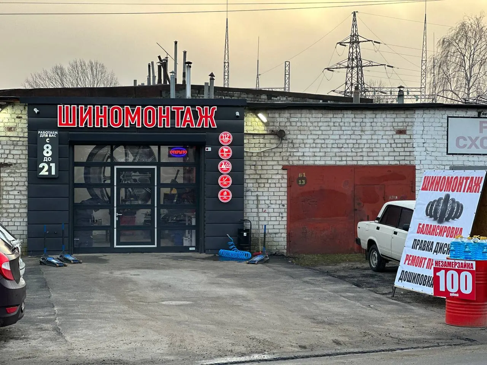
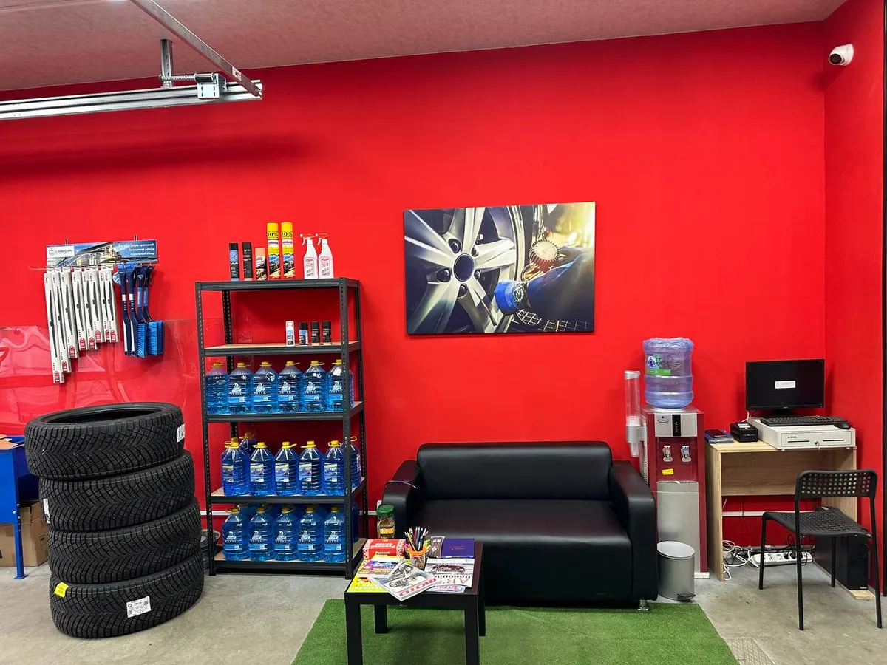
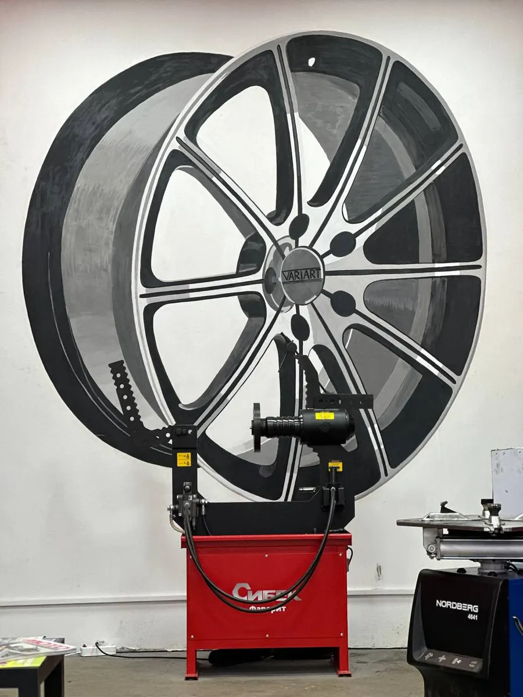
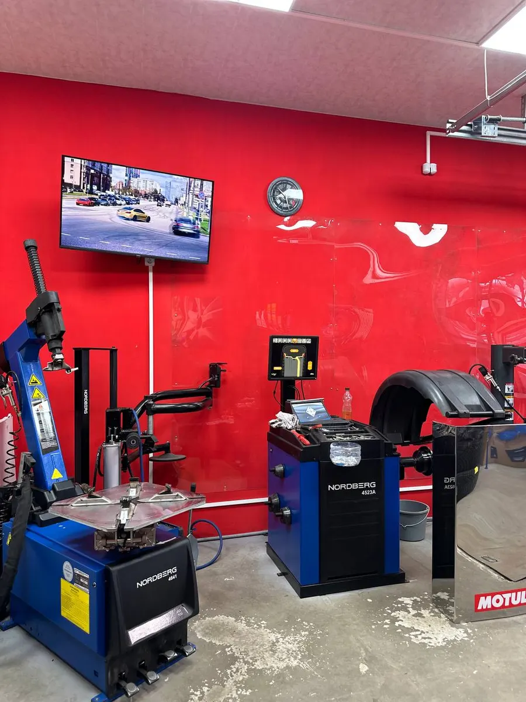

Шиномонтаж на Щербакова
Шиномонтаж в Нижнем Новгороде – варим боковые порезы
Перекидка колёс от 1700 ₽, правка литых дисков от 1000 ₽. Пока работаем – диван, кофе и телевизор.
- Берёмся за боковые порезы
- Правим литые диски до R22
- Тёплая зона ожидания

Цены по радиусу
Чем больше колесо, тем дороже работа. Позиции и цены – с нашей карточки на Яндекс.Картах.
Перекидка колёс
- R12–R131 700 ₽
- R141 750 ₽
- R151 800 ₽
- R162 100 ₽
- R172 200 ₽
- R182 800 ₽
- R19–R203 200 ₽
- R21–R223 600 ₽
Правка литых дисков
- R12–R131 000 ₽
- R141 300 ₽
- R151 600 ₽
- R162 000 ₽
- R172 200 ₽
- R182 500 ₽
- R192 800 ₽
- R203 000 ₽
- R21–R223 400 ₽
Балансировка, шиномонтаж, съём-установка
- R12–R13141 ₽
- R14145 ₽
- R15150 ₽
- R16175 ₽
- R17183 ₽
- R18233 ₽
- R19–R20266 ₽
- R21–R22300 ₽
Ремонт и прочее
- Варка бокового порезауточнить
- Ремонт жгутом400 ₽
- Ремонт заплаткой600 ₽
- Дошиповкауточнить
- Подкачка20 ₽
- Незамерзайка100 ₽
Точную сумму уточняйте при записи: мастер назовёт её до начала работы.
Как записаться
- 01
Выберите услугу, день и время
В форме наверху страницы, за минуту.
- 02
Сообщение уйдёт в WhatsApp
Текст соберётся сам, останется нажать «Отправить».
- 03
Приезжайте на Щербакова, 31
Корпус 1, рядом с дорогой.
- 04
Ждите в тёплой зоне
Диван, телевизор, кофе и чай, для детей раскраски.



За чем к нам едут
Боковые порезы
Варим порезы, после которых в других шиномонтажах советуют новое колесо.
Гнутые литые диски
Правим диски от R12 до R22, цена по радиусу в прайсе выше.
Показываем, что с колесом
Если нашли проблему, покажем её и объясним, что делать.
Ждать не на улице
Зона ожидания в тёплом боксе: диван, телевизор, кофе.
Отзывы с Яндекс.Карт
«Искала медь , а нашла золото Был боковой порез шины Обзвонила 15 шиномонтажек, никто не взялся за варку либо цена была по цене нового колеса Мастер Александр сразу сказал что сделать можно без проблем, и цена приятная И по общению просто супер, без какой то надменности ( как это обычно бывает у мастеров с водителями девушками ) Сказал через 3 часа будет готово - через 3 часа позвонил все готово Колесо как новое Спасибо !»
Юлия Матвеева · 6 марта 2025
«Делала правку дисков ,все очень качественно и профессионально ,персонал вежливый ,понравилась зона клиентского ожидания с диваном и телевизором ,все чисто и тепло ,угостили чаем ,вообщем советую ,цены более чем приемлемые ,в отличие от многих шиномонтажек .»
Зарина Тухтабоева · 4 февраля 2024
«Приехал переобуваться на зиму, оказалось три диска гнутые, все поправили и быстро переобули»
Артем Щ. · 27 октября 2024
Отзывы с карточки на Яндекс.Картах, без правок.
Частые вопросы
Беретесь за боковой порез?
Да, варим боковые порезы. Цену назовём, когда увидим колесо.
Сколько стоит правка диска?
От 1000 ₽ за R12–R13 до 3400 ₽ за R21–R22, все радиусы – в прайсе выше.
Где подождать, пока делаете?
В зоне ожидания в боксе: диван, телевизор, кофе и чай, для детей раскраски.
Можно без записи?
Позвоните +7 (831) 423-05-05 – скажем, есть ли свободный бокс прямо сейчас.
Запишитесь на удобное время
- Адрес
- улица Щербакова, 31, корп. 1, Нижний Новгород
- Часы
- Каждый день 08:00–20:00
- Телефон
- +7 (831) 423-05-05